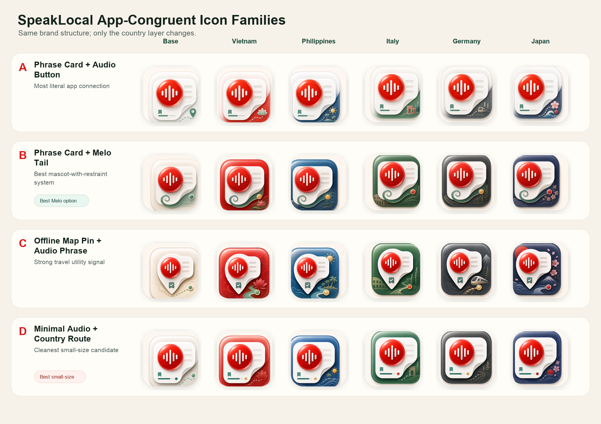
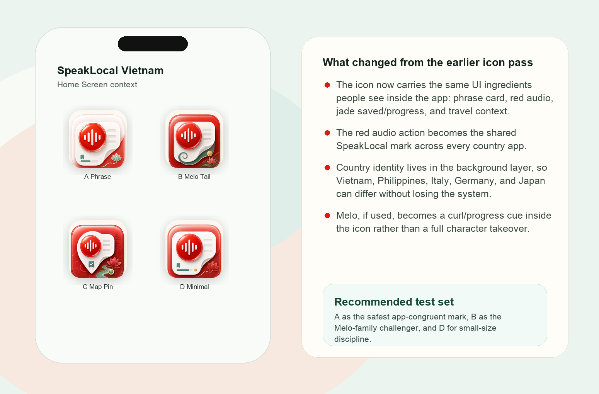
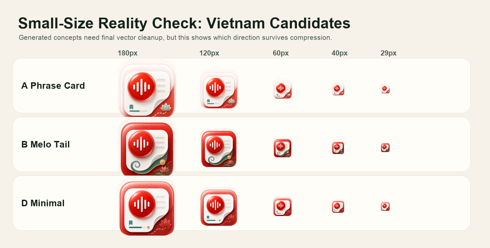
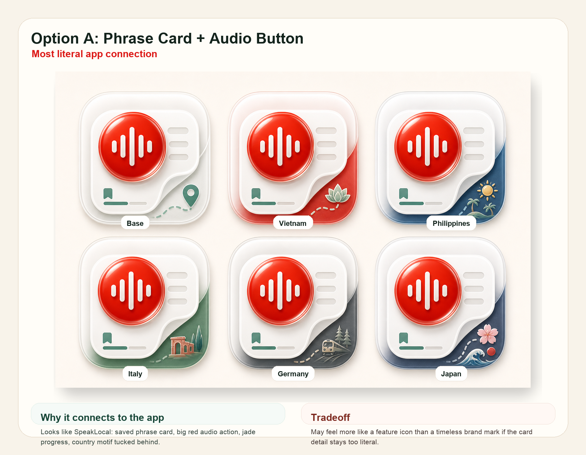
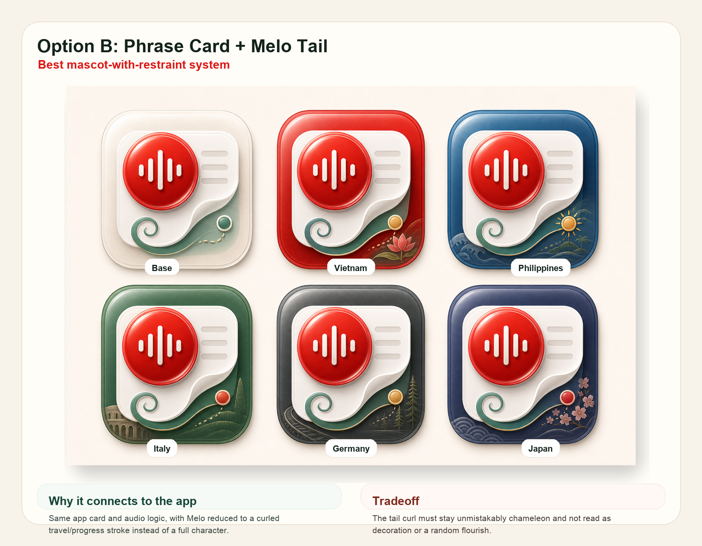
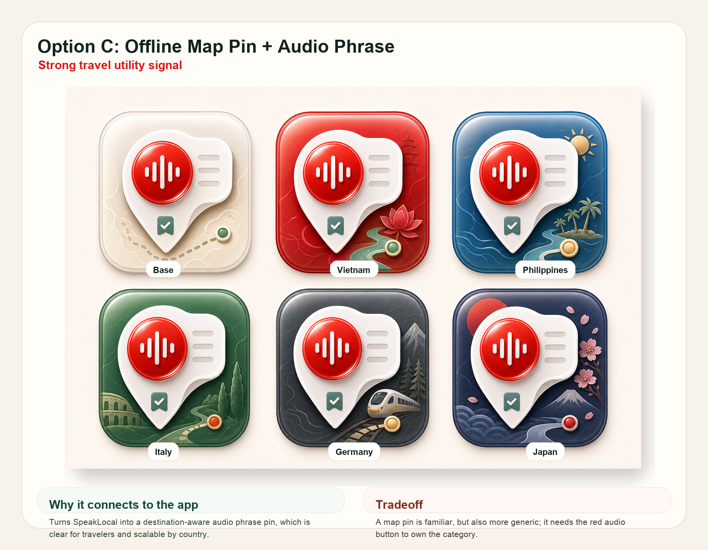
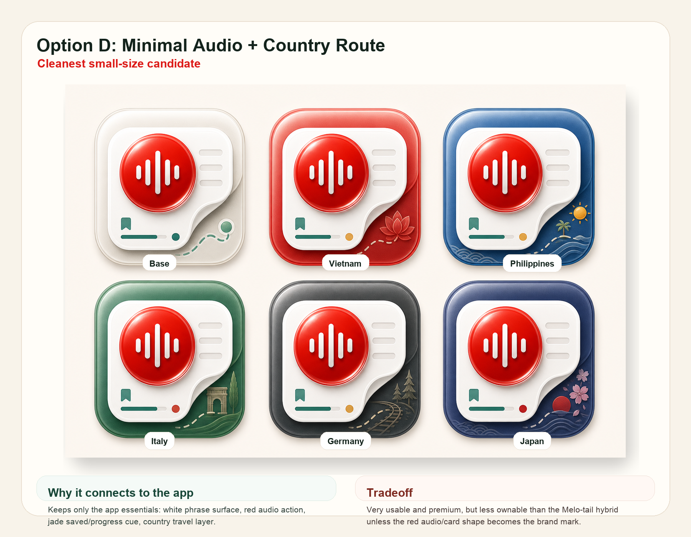

App-congruent v2
SpeakLocal Icon Family Options
This pass keeps the icon closer to the app itself: phrase cards, red audio, jade saved/progress cues, and country travel layers. Melo appears only as a restrained tail/progress cue in one option.
Country Family Comparison
The foreground is the SpeakLocal system. The country-specific layer changes behind it for Vietnam, Philippines, Italy, Germany, and Japan.

Vietnam Candidates In Context
These are the four Vietnam launch candidates shown together so the icon can be judged as something that lives beside the app, not just as isolated artwork.

Small-Size Check
Generated imagery still needs final vector cleanup. This sheet shows which ideas survive when the icon gets compressed.

Annotated Options




Design Read
Option ASafest app fit. It reads as SpeakLocal's actual phrase/audio utility.
Option BBest Melo system. The mascot becomes a brand cue, not the whole app.
Option CUseful travel signal, but map pins can become generic quickly.
Option DCleanest tiny icon. Use it to simplify A or B before final art.